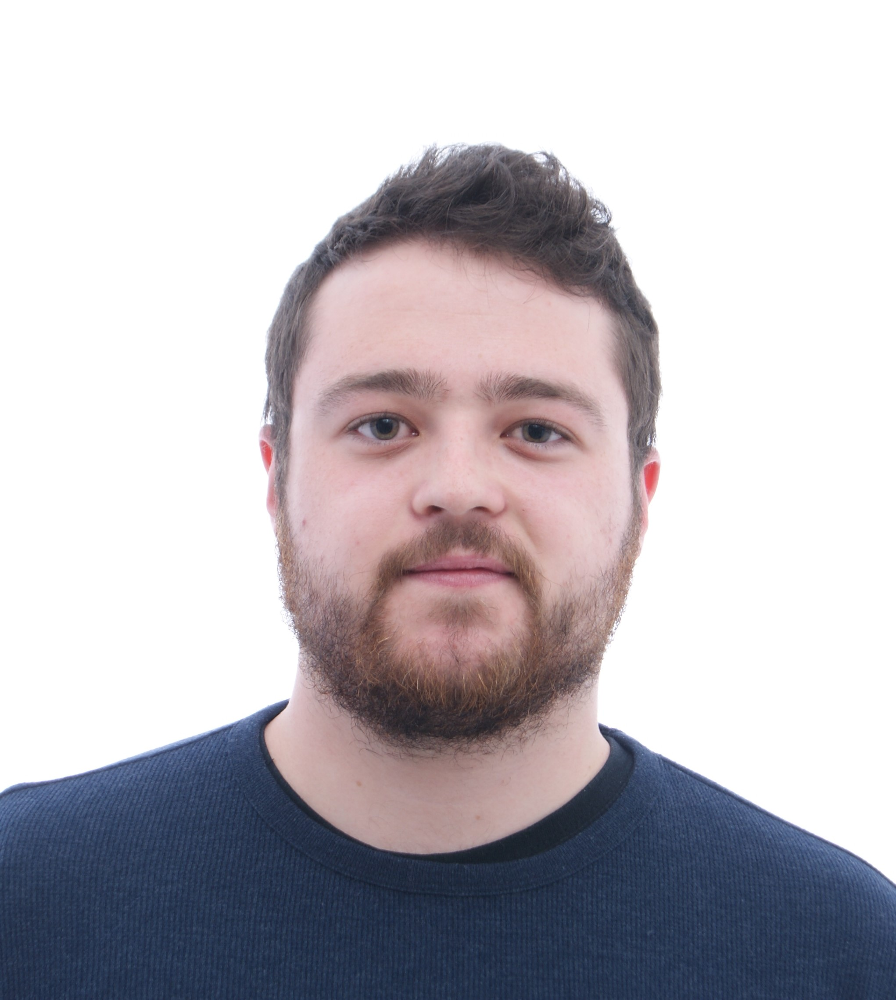

Francisco Javier Carande Cabeza
-
 664 82 11 04
664 82 11 04
-
 javier.carande@hotmail.com
javier.carande@hotmail.com
-
 fjaviercarandec
fjaviercarandec
-
 Fecha de nacimiento: 14-01-1997
Fecha de nacimiento: 14-01-1997
-
 c/Reina Sofía nº39
c/Reina Sofía nº39
Castilleja de la Cuesta, Sevilla 41950

Formación Académica
-
C.F.G.S Desarrollo de Aplicaciones Web
IES Alixar, Castilleja de la Cuesta (Sevilla) [Sep 2019 - Actualidad] -
Ingeniería Informatica - Ingeniería de Computadores
Escuela Técnica Superior de Ingeniería Informática, Sevilla [Sep 2015] -
Bachillerato Tecnológico Bilingüe
IES Gustavo Adolfo Bécquer, Sevilla [Sep 2013 - May 2015]
Destrezas
- Java
- HTML
- CSS
- SQL
- C++
- Office
- Adobe Premiere
- Sony Vegas Pro
Competencias
- Proactivo
- Profesional
- Gran capacidad de trabajo en equipo y adaptación
- Empatía
- Capacidad de superación
- Inteligencia emocional
- Facilidad en el aprendizaje
Idiomas
Inglés B2Otros Datos de Interés
Posibilidad de incorporación inmediata
Movilidad internacional
Flexibilidad de horario
Formación equivalente al Técnico en Nivel Básico en Prevención de Riesgos Laborales
Jornada sobre SonarQube en IES Alixar
Movilidad internacional
Flexibilidad de horario
Formación equivalente al Técnico en Nivel Básico en Prevención de Riesgos Laborales
Jornada sobre SonarQube en IES Alixar
Módulos de 2º DAW
| Nombre del Módulo | Horas Semanales |
|---|---|
| DWES | 8 |
| DWEC | 6 |
| DAW | 3 |
| DIW | 6 |
| HLC | 3 |
| EINEM | 4 |